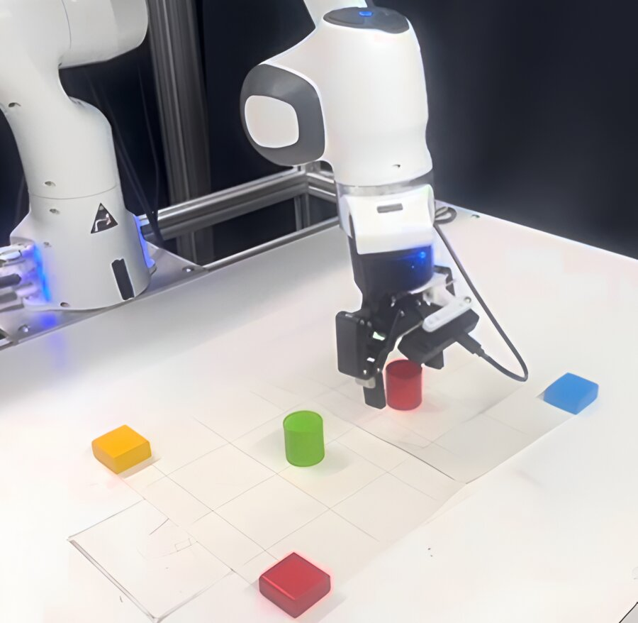

What Does a Skill Vocabulary Cost?
A Closed-Loop Decomposition over Demonstrated Motions
Placed after a trained policy, a library of demonstrated motions costs no success, and it shows that discrete skill policies lose success in executing a chosen motion, not in choosing it.
1Intuitive Robots Lab, Karlsruhe Institute of Technology (KIT) 2Robotics Institute Germany (RIG)
-
1
Wrapping a policy costs nothing.
Across six architectures, including a 7B vision-language-action model, the wrapped policy is statistically equivalent to the original, at +0.6 points on average. Sec. 4
-
2
The loss lies in execution, not in the choice.
On LIBERO-90, a selector's choice costs at most 2 points under the reference's placement and correction. Its own placement and correction cost up to 12. Sec. 5
-
3
Offline reconstruction misjudges libraries.
It keeps improving after closed-loop success has saturated, and it ranks highest a library design that costs 5 points in closed loop. Sec. 6
Abstract
Discrete skill policies execute motions drawn from a finite vocabulary. In most current methods, this vocabulary is a latent codebook learned jointly with a selector and a decoder. When such a policy fails in closed loop, the failure cannot be traced to the vocabulary, to the choice of skill or to its execution. We present Movement Prototype Quantization (MPQ), which places a library of demonstrated motions after a trained policy instead of inside it. MPQ replaces each predicted action chunk with its nearest library element, corrects that element toward the prediction within a bound, and trains no parameters. Across six architectures, including a 7B vision-language-action model, the wrapped policy is statistically equivalent to the original. A reference policy executed through the library is therefore a baseline for any selector over the same library. Substituting a selector's components one at a time attributes its shortfall to them. On LIBERO-90, with selectors on three backbones, quantization costs nothing and the choice of skill costs at most 2 points under the reference's placement and correction. The selectors' own placement and correction account for nearly all of the remaining gap, up to 12 points. Offline reconstruction predicts none of these differences and misjudges library size, design and transfer across benchmark suites.
Building the library
Demonstrations are cut into 20-step segments, fit to B-spline control points, and rotated about gravity into a common frame. k-means groups them by the distance between their trajectories, and each cluster mean is replaced by its nearest real segment. The library for LIBERO-90 holds 256 such movement prototypes and takes about two minutes to build.
What a skill vocabulary costs
Because the wrapped policy is statistically equivalent to the original, the reference policy executed through the library is a baseline for any selector over the same library. Substituting the selector's choice, and then its placement and correction, splits its shortfall into selection and execution. On three backbones, the choice costs at most one point in this order, and nearly all of the loss lies in placing and correcting the chosen motion.
Offline reconstruction misjudges libraries
Data
| K | success of wrapped ACT (%) | 95% CI over tasks | explained variance (%) |
|---|
Libraries are usually validated by how well they reconstruct the demonstrations. In closed loop, wrapped ACT matches the bare policy from K = 128 onward, while reconstruction keeps improving by another 1.7 points over two further doublings. Selecting K by reconstruction would therefore choose a library several times larger than the task requires. The two criteria also disagree on design. Dividing out amplitude in addition to yaw costs 5 points in closed loop, yet reconstruction ranks that library highest.
On a real robot

We run a fine-tuned π0.5 on a Franka Panda in the DROID configuration. The task is to stack one of two cylinders on whichever of four colored cubes the instruction names. The library is built from the 400 fine-tuning demonstrations, and the bound is the one selected in simulation. Since the policy commands absolute poses, the layer converts them to deltas and back.
The bare policy succeeds in 15 of 15 attempts and the wrapped policy in 13 of 15 (Fisher exact test, p = 0.48). Both failures are missed grasps. With fifteen attempts per arm, this comparison can resolve only large differences.
Use it
git clone https://github.com/intuitive-robots/mpq && cd mpq
pip install -e .from mpq import MPQ
layer = MPQ("libraries/libero90_yaw_k256_g5.pt") # the paper's LIBERO-90 library
executed = layer.quantize(chunk) # [T, 7] end-effector deltas -> [T, 7]The layer needs only torch and numpy. The README covers building a library from your own robot's demonstrations, robots that command absolute poses, and reproducing the paper's Diffusion Policy results.
Citation
@article{li2026skillvocabulary,
title = {What Does a Skill Vocabulary Cost? A Closed-Loop Decomposition over Demonstrated Motions},
author = {Li, Maximilian Xiling and Blank, Nils and Mattes, Paul and Vanjani, Pankhuri and Lioutikov, Rudolf},
journal = {arXiv preprint},
year = {2026}
}